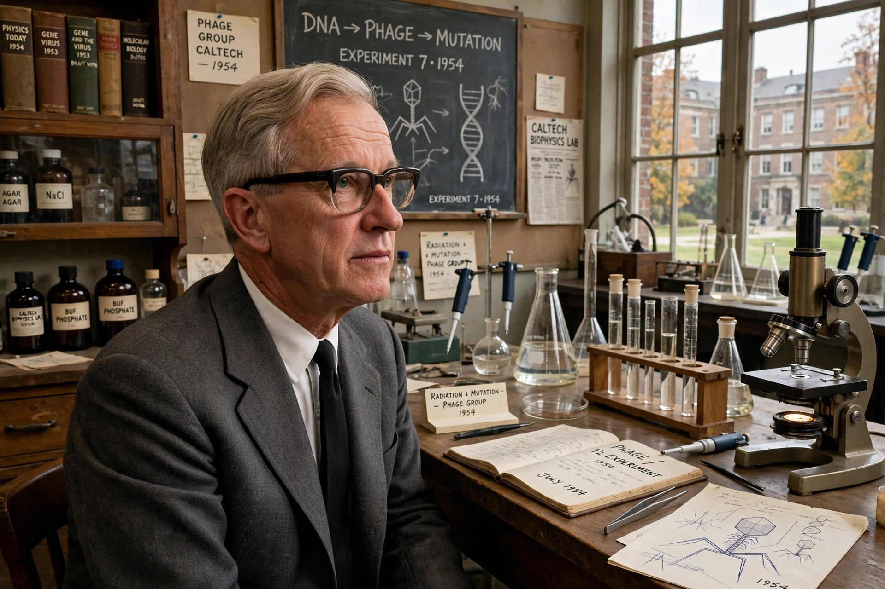

Max Ludwig Henning Delbrück (September 4, 1906 – March 9, 1981) was a German-American biophysicist who shared the 1969 Nobel Prize in Physiology or Medicine for discoveries concerning the replication mechanism and genetic structure of viruses.

| Max Delbrück | |
|---|---|
| Born | 4 September 1906, Berlin, Germany |
| Died | 9 March 1981, Pasadena, California |
| Fields | Biophysics, molecular biology |
| Awards | Nobel Prize (1969) |
Trained in physics under Niels Bohr's influence, Delbrück emigrated to the United States in 1937. At Vanderbilt and Caltech he founded the Phage Group with Salvador Luria and Alfred Hershey, making bacteriophages a model system for molecular genetics.
His work inspired Erwin Schrödinger's What Is Life? and a generation of molecular biologists.